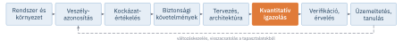
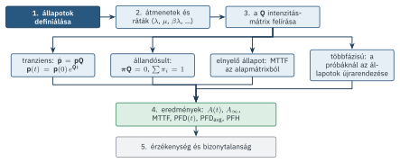
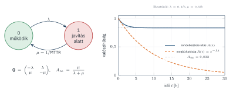
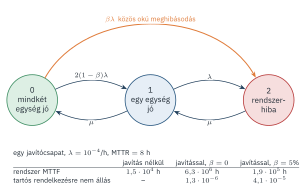
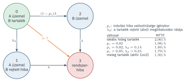
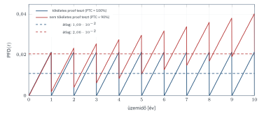

12. Markov-modellek és rendelkezésre állás

A blokkdiagram és a hibafa statikus modellek: azt írják le, mely meghibásodás-kombinációk okoznak bajt, de azt nem, hogy mikor és milyen sorrendben. Sok fontos kérdésre így nem adnak választ. Mekkora egy javítható rendszer rendelkezésre állása? Mennyit ér, ha a redundáns egység meghibásodása után gyorsan javítunk? Mennyire rontja a hideg tartalék előnyét az indulási hiba? Hogyan alakul egy rejtett hibákra hajlamos védelem meghibásodási valószínűsége a próbák között, és mi történik, ha a próba nem fedi fel az összes hibát? Ezekre a kérdésekre a Markov-modellek felelnek. Ebben a fejezetben megismerjük a folytonos idejű Markov-láncok alapjait, a rendelkezésre állás fogalmait, a javítható és a tartalékolt rendszerek modelljeit, végül a biztonsági rendszerek periodikus tesztelésének leírására szolgáló többfázisú Markov-modelleket.
A fejezet végére képes leszel
- egy rendszer viselkedését állapotokkal és átmeneti rátákkal leírni, és felírni az intenzitásmátrixot;
- kiszámolni egy javítható rendszer pillanatnyi és tartós rendelkezésre állását, valamint az átlagos meghibásodásig eltelt időt;
- Markov-modellel értékelni a javítás, a közös okú meghibásodás, az indulási hiba és a rejtett tartalékhiba hatását;
- periodikusan tesztelt biztonsági rendszerek PFD-jét többfázisú Markov-modellel számolni, és értelmezni a nem tökéletes proof teszt hatását;
- felismerni a Markov-modellek korlátait, és tudni, mikor van szükség szimulációra vagy más modellre.
12.1. Miért van szükség Markov-modellekre?
A statikus logikai modellek három feltevésre épülnek: az elemek két állapotúak, egymástól függetlenek, és a meghibásodások sorrendje nem számít (9. fejezet). A valódi rendszerekben ezek a feltevések gyakran sérülnek:
- Javítás: a meghibásodott elemet javítják, és a rendszer visszatér a működő állapotba. A rendszer állapota ilyenkor időben ide-oda vált.
- Sorrend: a hideg tartalék csak a fő egység kiesése után indul; egy átkapcsoló hibája csak akkor számít, ha a fő egység előtt következik be.
- Állapotfüggő igénybevétel: ha egy kétcsatornás rendszer egyik csatornája kiesik, a másikra nagyobb terhelés jut, és nagyobb rátával hibásodhat meg.
- Tesztelés: a rejtett hibák csak a próbák időpontjaiban derülnek ki, így a rendszer állapota a próbák ütemében változik.
A Markov-modell ezeket közvetlenül ábrázolja. A rendszer lehetséges állapotait csomópontok, az állapotok közötti átmeneteket pedig rátákkal címkézett nyilak jelölik. A Markov-modelleket az IEC 61165 szabványosítja (IEC 2006), és az IEC 61508-6 a biztonsági funkciók PFD- és PFH-értékének számítására is elfogadott módszerként ismerteti (IEC 2010).
12.2. A folytonos idejű Markov-lánc
A rendszer állapotát egy \(X(t)\) valószínűségi változó írja le, amely véges sok érték valamelyikét veszi fel. A Markov-tulajdonság szerint a jövőbeli viselkedés csak a jelenlegi állapottól függ, attól nem, hogyan jutott a rendszer ide:
\[ P\bigl(X(t+s) = j \mid X(t) = i,\; X(u),\, u < t\bigr) = P\bigl(X(t+s) = j \mid X(t) = i\bigr) . \tag{12.1}\]
Ha az átmeneti valószínűségek az időben nem változnak (homogén lánc), minden állapotban az ott töltött idő exponenciális eloszlású, és az \(i\) állapotból a \(j\) állapotba vezető átmenetet egy állandó \(q_{ij}\) ráta jellemzi. Ez az exponenciális élettartam-modell (8. fejezet) természetes kiterjesztése: az emlékezetnélküliség az élettartamok, a Markov-tulajdonság a rendszerállapotok szintjén ugyanazt jelenti. A rátákból alkotott mátrix az intenzitásmátrix (generátormátrix) \(\mathbf{Q}\): főátlón kívüli elemei az átmeneti ráták, főátlójában pedig \(q_{ii} = -\sum_{j \ne i} q_{ij}\) áll, így minden sor összege nulla.
Az állapotvalószínűségek \(\mathbf{p}(t) = [p_0(t), p_1(t), \dots]\) sorvektorára a Kolmogorov-egyenletek érvényesek:
\[ \frac{d\mathbf{p}(t)}{dt} = \mathbf{p}(t)\,\mathbf{Q}, \qquad \mathbf{p}(t) = \mathbf{p}(0)\,e^{\mathbf{Q}t} . \tag{12.2}\]
Három kérdéstípusra szokás választ keresni (12.1. ábra):
- tranziens viselkedés: az állapotvalószínűségek időfüggése, például a rendelkezésre állás \(A(t)\) vagy a meghibásodási valószínűség \(\text{PFD}(t)\);
- tartós (állandósult) viselkedés: hosszú idő után az állapotvalószínűségek egy \(\boldsymbol{\pi}\) határeloszláshoz tartanak, amely a \(\boldsymbol{\pi}\mathbf{Q} = \mathbf{0}\), \(\sum_i \pi_i = 1\) lineáris egyenletrendszer megoldása;
- első elérési idő: ha a rendszerhiba állapotából nincs visszaút (elnyelő állapot), az odáig eltelt idő várható értéke a rendszer MTTF-je. Ha \(\mathbf{Q}_T\) a nem elnyelő állapotokra szűkített mátrix, az \(\mathbf{N} = -\mathbf{Q}_T^{-1}\) alapmátrix \((i,j)\) eleme a \(j\) állapotban töltött várható idő az \(i\) állapotból indulva, így az MTTF az \(\mathbf{N}\) kezdőállapothoz tartozó sorának összege.

12.3. A rendelkezésre állás
A javítható rendszerek legfontosabb jellemzője a rendelkezésre állás (availability): annak képessége, hogy a rendszer adott időpontban vagy időtartam alatt el tudja látni a funkcióját, feltéve, hogy a szükséges külső erőforrások rendelkezésre állnak (IEC 2015). Három változatát különböztetjük meg:
- pillanatnyi rendelkezésre állás \(A(t)\): annak valószínűsége, hogy a rendszer a \(t\) időpontban működőképes;
- átlagos rendelkezésre állás egy \([0, T]\) időszakra: \(\bar{A}(T) = \frac{1}{T}\int_0^T A(t)\,dt\), a működőképes idő várható aránya;
- tartós rendelkezésre állás \(A_\infty = \lim_{t\to\infty} A(t)\).
A rendelkezésre állás nem azonos a megbízhatósággal. A megbízhatóság \(R(t)\) annak valószínűsége, hogy a rendszer \([0,t]\) alatt egyszer sem hibásodik meg; a rendelkezésre állás megengedi, hogy közben meghibásodjon és megjavítsák. Ezért mindig \(A(t) \ge R(t)\). A rendelkezésre nem állás \(U = 1 - A\) gyakran szemléletesebb: évi állásidőként (órában) is kifejezhető.
A gyakorlatban a javítási idő összetevői is számítanak. A belső (inherent) rendelkezésre állás csak a tényleges javítási időt veszi figyelembe; az üzemi (operational) rendelkezésre állás a hiba felismerésének, a szakember kiérkezésének, az alkatrész beszerzésének és az adminisztrációnak az idejét is (Rausand és mtsai. 2020). Egy biztonsági rendszer PFD-számításánál az MTTR-be mindezt bele kell érteni, ameddig a biztonsági funkció nem áll rendelkezésre.
12.3.1. Egyetlen javítható elem
A legegyszerűbb Markov-modellnek két állapota van: a 0 állapotban az elem működik, az 1 állapotban javítják (12.2. ábra). A meghibásodási ráta \(\lambda\), a javítási ráta \(\mu = 1/\text{MTTR}\). A Kolmogorov-egyenletek megoldása \(p_0(0) = 1\) kezdőfeltétellel
\[ A(t) = \frac{\mu}{\lambda + \mu} + \frac{\lambda}{\lambda + \mu}\, e^{-(\lambda + \mu)t}, \qquad A_\infty = \frac{\mu}{\lambda + \mu} = \frac{\text{MTTF}}{\text{MTTF} + \text{MTTR}} . \tag{12.3}\]
A rendelkezésre állás exponenciálisan, \(1/(\lambda+\mu)\) időállandóval áll be a tartós értékére. Mivel a javítás általában sokkal gyorsabb a meghibásodásnál (\(\mu \gg \lambda\)), ez az időállandó közel az MTTR, vagyis a tartós állapot gyorsan beáll. Kis \(\lambda\,\text{MTTR}\) szorzatnál a rendelkezésre nem állás \(U_\infty \approx \lambda\,\text{MTTR}\). A \(\text{MTBF} = \text{MTTF} + \text{MTTR}\) a két egymást követő meghibásodás közötti átlagos idő.

Egy hűtővízszivattyú meghibásodási rátája \(\lambda = 10^{-4}\,\text{h}^{-1}\) (MTTF = 10 000 óra), az átlagos javítási idő 8 óra. A tartós rendelkezésre állás \(A_\infty = 0{,}125/(0{,}125 + 0{,}0001) = 0{,}99920\), a rendelkezésre nem állás \(U_\infty = 7{,}99\cdot10^{-4}\), alig kevesebb, mint a \(\lambda\,\text{MTTR} = 8\cdot10^{-4}\) közelítés. Az évi átlagos állásidő \(7{,}99\cdot10^{-4}\cdot 8760 \approx 7\) óra. Az időállandó \(1/(\lambda + \mu) \approx 8\) óra, tehát a tartós érték egy-két nap alatt beáll.
12.4. Redundáns, javítható rendszerek
Két azonos, párhuzamosan működő egység (1oo2) Markov-modelljének három állapota van: mindkét egység jó, egy egység jó, a rendszer meghibásodott (12.3. ábra). Egy javítócsapat esetén a 0 állapotból \(2\lambda\) rátával jutunk az 1 állapotba, onnan \(\lambda\) rátával a rendszerhibába, a javítás pedig mindkét lépést \(\mu\) rátával fordítja vissza. A közös okú meghibásodást a β-tényezős modell (10.6. szakasz) szerint egy közvetlen, \(\beta\lambda\) rátájú átmenet írja le a 0 állapotból a rendszerhibába; ilyenkor a független meghibásodás rátája \(2(1-\beta)\lambda\).

Ha a 2 állapotot elnyelőnek tekintjük, az alapmátrixból a rendszer MTTF-je \(\beta = 0\) esetén
\[ \text{MTTF}_{1\text{oo}2} = \frac{3\lambda + \mu}{2\lambda^2} . \tag{12.4}\]
Javítás nélkül (\(\mu = 0\)) ez a 9. fejezetből ismert \(1{,}5/\lambda\), javítással viszont nagyságrendekkel nagyobb lehet. A szivattyú adataival (\(\lambda = 10^{-4}\,\text{h}^{-1}\), \(\text{MTTR} = 8\) óra) a két szivattyúból álló rendszer MTTF-je javítás nélkül 15 000 óra, javítással \(6{,}3\cdot10^{6}\) óra, azaz több mint hétszáz év. A redundancia igazi ereje tehát a gyors javításban rejlik: a rendszer csak akkor hibásodik meg, ha a második egység éppen a javítás néhány órája alatt esik ki.
A közös okú meghibásodás ezt az előnyt drámaian csökkenti. Már \(\beta = 5\%\) mellett is az MTTF \(1{,}9\cdot10^{5}\) órára (22 év) esik, harmincketted részére, a tartós rendelkezésre nem állás pedig \(1{,}3\cdot10^{-6}\)-ról \(4{,}1\cdot10^{-5}\)-re nő. A magyarázat egyszerű: a független kettős meghibásodás rátája körülbelül \(2\lambda^2\,\text{MTTR} = 1{,}6\cdot10^{-7}\,\text{h}^{-1}\), a közös okúé \(\beta\lambda = 5\cdot10^{-6}\,\text{h}^{-1}\), harmincszor nagyobb. A javítható redundáns rendszerekben a közös okú meghibásodás szinte mindig uralja a rendszerhibát.
A modell azt is megmutatja, mennyit ér egy második javítócsapat. Ha a rendszerhiba állapotában két csapat egyszerre javít, a 2 állapotból az 1 állapotba \(2\mu\) rátával lehet visszajutni. Ez a tartós rendelkezésre nem állást felére csökkenti, az MTTF-et viszont nem változtatja, mert az MTTF az első rendszerhibáig tart. A rendelkezésre állás és a megbízhatóság tehát különböző intézkedésekre érzékeny, és a kérdés megfogalmazásától függ, melyik a mérvadó.
12.4.1. A hideg tartalék valósághű modellje
A 9.5. szakasz szerint az ideális hideg tartalék MTTF-je \(2/\lambda\), jobb, mint a melegé (\(1{,}5/\lambda\)). A valóságban azonban a tartalék a bekapcsoláskor nem mindig indul el, és a várakozás alatt is meghibásodhat úgy, hogy ez csak az igénykor derül ki. A 12.4. ábra Markov-modellje mindkét hatást tartalmazza: a \(p_s\) indulási hiba közvetlenül a rendszerhibába vezet, a \(\lambda_d\) alvó (rejtett) meghibásodás pedig egy olyan állapotba, amelyben a fő egység még működik, de már nincs mögötte tartalék.

Két százalékos indulási hiba alig csökkenti az MTTF-et (\(1{,}98/\lambda\)), de ha a tartalék a várakozás alatt a fő egység rátájának tizedével hibásodik meg, az MTTF már \(1{,}89/\lambda\), öt százalék indulási hibával és ötödnyi alvó rátával pedig \(1{,}79/\lambda\). A hideg tartalék előnye a melegével szemben így a felére olvad. Ha a tartalékot rendszeresen kipróbálják, a rejtett hibák időben kiderülnek; ennek modellezésére szolgálnak a következő szakasz többfázisú modelljei.
12.5. Biztonsági rendszerek: rejtett hibák és periodikus tesztelés
A biztonsági rendszerek nagy része nyugalmi állapotban van, és csak igénykor kell működnie. Veszélyes meghibásodásaik egy része a diagnosztika révén azonnal kiderül (DD), más része rejtve marad (DU), amíg egy proof teszt vagy egy valódi igény fel nem fedi (6.5. szakasz). A rendszer állapota így két különböző időskálán változik: a meghibásodások folytonos időben, véletlenszerűen következnek be, a próbák viszont rögzített időpontokban, determinisztikusan történnek.
Ezt a többfázisú Markov-modell írja le. A próbák közötti szakaszban a rendszer egy közönséges Markov-láncként fejlődik, amelyben a DU-állapotokból nincs javítás. A próba pillanatában egy átrendezési mátrix a rejtett hibás állapotokat a javítás alatti vagy a hibátlan állapotba képezi le, és a következő szakasz ebből az eloszlásból indul. A \(\text{PFD}(t)\) a veszélyes állapotok valószínűségeinek összege; jellegzetes fűrészfog alakú görbe, amely minden próba után nullára (vagy közel nullára) esik vissza, és a következő próbáig nő. A biztonsági funkció jellemzője ennek időátlaga, a \(\text{PFD}_{\text{avg}}\) (Rausand 2014; IEC 2010).
A két gyorszáró szelep (1oo2, \(\lambda_{DU} = 2{,}5\cdot10^{-6}\,\text{h}^{-1}\), \(\beta = 10\%\), évenkénti proof teszt) három állapottal írható le: mindkét szelep jó; egy szelep rejtett hibás; mindkettő hibás (veszélyes). A 0 állapotból \(2(1-\beta)\lambda_{DU}\) rátával jutunk az 1-be és \(\beta\lambda_{DU}\) rátával a 2-be, az 1-ből \(\lambda_{DU}\) rátával a 2-be. A próba a rendszert visszaállítja a 0 állapotba.
A Markov-modellből a \(\text{PFD}(t)\) a próba előtti pillanatban \(2{,}57\cdot10^{-3}\)-ig nő, az időátlaga \(1{,}22\cdot10^{-3}\). Az IEC 61508-6 egyszerűsített képletei (13. fejezet) \(1{,}23\cdot10^{-3}\) értéket adnak; a különbség fél százalék alatti, és a képlet a biztonságos oldalon van. A Markov-modell előnye nem ebben az egyszerű esetben mutatkozik meg, hanem ott, ahol a képletek feltevései sérülnek: eltolt idejű próbák, nem tökéletes próba, a próba alatti kiiktatás, állapotfüggő javítás vagy több, egymástól függő alrendszer esetén.
12.5.1. A nem tökéletes proof teszt
A proof teszt ritkán fed fel minden rejtett hibát. Egy gyorszáró szelep éves próbája például ellenőrizheti, hogy a szelep zár-e, de azt nem feltétlenül, hogy a zárás a valódi üzemi nyomáskülönbség mellett is tömör-e. A próba lefedettsége (proof test coverage, PTC) a rejtett veszélyes meghibásodások azon hányada, amelyet a próba felfed. A fel nem fedett hibák csak egy alaposabb vizsgálatnál, például a \(T_M\) időközű nagyjavításnál vagy cserénél derülnek ki. Az átlagos PFD egycsatornás elemre ekkor közelítőleg
\[ \text{PFD}_{\text{avg}} \approx \text{PTC}\cdot\lambda_{DU}\left(\frac{T_1}{2} + \text{MTTR}\right) + (1 - \text{PTC})\cdot\lambda_{DU}\,\frac{T_M}{2} . \tag{12.5}\]
A második tag a nem tesztelt hibák „lassan halmozódó” hozzájárulása, amely a hosszú \(T_M\) miatt már kis \(1 - \text{PTC}\) mellett is jelentős lehet (Rausand 2014; IEC 2010).

A ReaktorVéd egycsatornás szelepére (\(\lambda_{DU} = 2{,}5\cdot10^{-6}\,\text{h}^{-1}\), \(T_1 = 1\) év, \(T_M = 10\) év) a tökéletes próba mellett \(\text{PFD}_{\text{avg}} = 1{,}10\cdot10^{-2}\), 90%-os lefedettség mellett \(2{,}08\cdot10^{-2}\), 70%-os mellett \(4{,}05\cdot10^{-2}\) (12.5. ábra). Egy látszólag apró részlet, a próba módja, tehát akár négyszeresére is növelheti a PFD-t. Ezért az IEC 61511 megköveteli, hogy a proof teszt eljárásai írásban rögzítsék, mely meghibásodásokat fedik fel, és a PFD-számítás a tényleges lefedettséggel készüljön (IEC 2016).
12.6. Megoldási módszerek és korlátok
Kis modellek (két-három állapot) zárt alakban is megoldhatók, mint az 12.3. és az 12.4. egyenlet. Nagyobb modelleknél numerikus módszereket használunk: a mátrixexponenciális függvény közvetlen számítását, az egyenletes randomizálást (uniformization) vagy a differenciálegyenlet-rendszer numerikus integrálását; a tartós eloszláshoz pedig egy lineáris egyenletrendszert oldunk meg (Trivedi és Bobbio 2017).
A Markov-modellek fő korlátja az állapotrobbanás: \(n\) kétállapotú elem \(2^n\) állapotot ad, tíz elem már 1024-et, húsz elem több mint egymilliót. Ezt a szimmetriák kihasználásával (azonos elemek összevonása), a modell modulokra bontásával (a statikus részek hibafával, a dinamikus részek Markov-modellel), illetve a kis valószínűségű állapotok elhagyásával lehet kezelni. A második korlát az exponenciális tartózkodási idő feltevése. A determinisztikus időtartamok (például egy rögzített javítási idő vagy a periodikus próba) a többfázisú modellekkel, az általános eloszlások fázistípusú közelítéssel vagy szemi-Markov-modellekkel kezelhetők. A legbonyolultabb viselkedésekre (állapotfüggő stratégiák, korlátozott javítási erőforrások, öregedés) a sztochasztikus Petri-hálók és a Monte Carlo-szimuláció a rugalmasabb eszközök (Trivedi és Bobbio 2017; Rausand 2014).
A kollaboratív cellában a biztonsági funkciók nemcsak a sérüléseket előzik meg, hanem a termelést is befolyásolják. Ha a lézerszkenner minden belépéskor biztonsági megállást vált ki, és a szerelő óránként hatszor lép be, a robot pedig minden alkalommal 20 másodpercre áll meg, egy egyszerű kétállapotú modell szerint a rendelkezésre állás \(1/(1 + 6\cdot 20/3600) = 0{,}968\), vagyis a műszakidő több mint 3%-a elvész. A sebesség- és távolságfelügyelet (speed and separation monitoring) ehelyett csak lassítja a robotot, amíg a szerelő a közelben van, így a veszteség kisebb (ISO 2016). A biztonsági funkciók téves vagy túl gyakori beavatkozása ráadásul arra ösztönözheti a dolgozókat, hogy megkerüljék a védelmet. A biztonság és a rendelkezésre állás együttes modellezése ezért a jó biztonsági tervezés része, nem pusztán gazdasági kérdés.
A gyakorlati útmutató 10. laborjában egy böngészős Markov-szerkesztővel állapotgráfot rajzolhatsz, és az alkalmazás kiszámolja a pillanatnyi és a tartós rendelkezésre állást, valamint az MTTF-et. A hozzá tartozó Colab-notebook a javítható 1oo2 rendszert, a hideg tartalékot és a gyorszáró szelepek többfázisú modelljét valósítja meg, és megmutatja a nem tökéletes proof teszt hatását a PFD fűrészfog-görbéjére.
- A Markov-modell állapotokkal és átmeneti rátákkal írja le a rendszert; a homogén lánc az exponenciális élettartam-modell kiterjesztése a rendszer szintjére.
- Az állapotvalószínűségek a Kolmogorov-egyenletekből számolhatók; a tartós eloszlás a \(\boldsymbol{\pi}\mathbf{Q} = \mathbf{0}\) egyenletrendszerből, az MTTF az elnyelő állapotos modell alapmátrixából adódik.
- A rendelkezésre állás megengedi a meghibásodást és a javítást, ezért mindig legalább akkora, mint a megbízhatóság; egyetlen elemre \(A_\infty = \text{MTTF}/(\text{MTTF}+\text{MTTR})\), és \(U_\infty \approx \lambda\,\text{MTTR}\).
- A javítható redundáns rendszerek MTTF-je nagyságrendekkel nagyobb a javítás nélkülinél, de a közös okú meghibásodás ezt az előnyt jelentősen csökkenti.
- A hideg tartalék előnyét az indulási hiba és a rejtett tartalékhiba nagyrészt eltüntetheti.
- A periodikusan tesztelt biztonsági rendszerek PFD-je fűrészfog alakú; a többfázisú Markov-modell pontosan leírja, és a nem tökéletes proof teszt hatását is megmutatja.
- A fő korlát az állapotrobbanás és az exponenciális tartózkodási idő feltevése; bonyolult esetekben Petri-hálók és Monte Carlo-szimuláció segít.
- Egy berendezés meghibásodási rátája \(2\cdot10^{-4}\,\text{h}^{-1}\), az átlagos javítási idő 12 óra. Mekkora a tartós rendelkezésre állás és az évi állásidő?
- Két azonos, javítható egység párhuzamosan működik, \(\lambda = 10^{-3}\,\text{h}^{-1}\), \(\mu = 0{,}1\,\text{h}^{-1}\), egy javítócsapat. Mekkora a rendszer MTTF-je javítással és javítás nélkül?
- Miért nem változtat a második javítócsapat az 1oo2 rendszer MTTF-jén, ha a rendelkezésre állását javítja?
- Egy szelep proof tesztjének lefedettsége 80%, \(\lambda_{DU} = 2{,}5\cdot10^{-6}\,\text{h}^{-1}\), a próba évenkénti, a nagyjavítás tízévenkénti, az MTTR 8 óra. Mekkora az átlagos PFD? Melyik tag a nagyobb?
- Hány állapota van egy olyan rendszer Markov-modelljének, amely hat, egymástól különböző, kétállapotú elemből áll? Miért kevesebb, ha az elemek azonosak?
Megoldás
- \(\lambda\,\text{MTTR} = 2{,}4\cdot10^{-3}\), \(U_\infty = 2{,}4\cdot10^{-3}/1{,}0024 = 2{,}39\cdot10^{-3}\), \(A_\infty = 0{,}99761\). Az évi állásidő \(2{,}39\cdot10^{-3}\cdot 8760 \approx 21\) óra.
- Javítással \(\text{MTTF} = (3\cdot10^{-3} + 0{,}1)/(2\cdot10^{-6}) = 51\,500\) óra; javítás nélkül \(1{,}5/\lambda = 1500\) óra.
- Mert az MTTF az első rendszerhibáig eltelt idő; a második csapat csak akkor dolgozik, ha a rendszer már meghibásodott (mindkét egység rossz), tehát az első rendszerhiba időpontját nem befolyásolja. A rendelkezésre állásra viszont hat, mert rövidíti a rendszerhiba állapotában töltött időt.
- \(0{,}8\cdot 2{,}5\cdot10^{-6}\cdot(4380 + 8) + 0{,}2\cdot 2{,}5\cdot10^{-6}\cdot 43\,800 = 8{,}78\cdot10^{-3} + 2{,}19\cdot10^{-2} = 3{,}07\cdot10^{-2}\). A nem tesztelt hibák tagja a nagyobb, pedig csak a hibák ötödét adják: a tízéves nagyjavítási időköz miatt ezek tízszer tovább maradnak rejtve.
- \(2^6 = 64\) állapot. Azonos elemeknél nem kell tudni, melyik elem hibás, csak azt, hány; ez \(n + 1 = 7\) állapotra csökkenti a modellt.
- Rausand, M. (2014): Reliability of Safety-Critical Systems: Theory and Applications. Wiley – a biztonsági rendszerek Markov-modelljei, a többfázisú modellek és a nem tökéletes proof teszt (Rausand 2014).
- Trivedi, K. S., Bobbio, A. (2017): Reliability and Availability Engineering. Cambridge University Press – a Markov-láncok, a szemi-Markov-modellek és a Petri-hálók részletes tárgyalása (Trivedi és Bobbio 2017).
- IEC 61165:2006 – a Markov-technikák alkalmazása a megbízhatósági elemzésben (IEC 2006).
- Rausand, M., Barros, A., Høyland, A. (2020): System Reliability Theory, 11–12. fejezet (Rausand és mtsai. 2020).